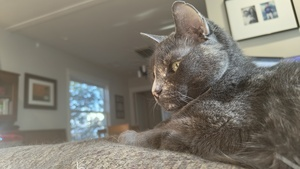

School
San Francisco State University
Hometown
Alameda, California
About Me
Hello! I am a third year college student who believes in open source projects. I am majoring in computer science, and I love creating! I've been an avid linux user (Arch BTW) and advocate for the last 5 years, and I love working in Python and more recently, Zig . I started making websites when I was around 12, and since, I have learned how to work in React and Svelte.
Other than websites, I have spent considerable time learning Jetpack Compose, a framework for building native apps for Android, as well as flutter. I am one of the few people who loves writing documentation, as I find it extremely rewarding to make things easier for other people to understand. I also love working on my homelab, and I'm quite familiar with docker, though I want to learn how to use Proxmox and Kubernetes.
I don't really have a professional photo, so here's one of my cats
Education
- Alameda High School (2018-2022)
- University of California, Merced (2022-2024)
- San Francisco State University (2024-present)
Experience
| Position | Company | Dates |
|---|---|---|
| Assistant Coach | Future Star Baseball | 2021-2023 |